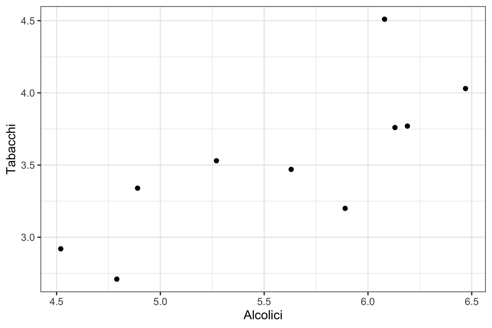

Statistica I
Esercitazione 5: covarianza, correlazione, regressione lineare semplice
Homepage
Alcuni dei problemi di questa esercitazione non sono stati svolti a lezione. Si consiglia agli studenti di provare a risolvere i problemi autonomamente.
Tabacco e bevande alcoliche
I risultati di un’indagine del governo britannico sulla spesa delle famiglie possono essere utilizzati per investigare sulla relazione tra l’ammontare speso per i tabacchi e quello speso per le bevande alcoliche.
La seguente tabella riporta, per n = 10 regioni della Gran Bretagna, la spesa settimanale media per famiglia per i due capitoli di spesa, espressa in sterline. I dati sono riferiti al 1981.
| Regione | Alcolici | Tabacchi |
|---|---|---|
| North | 6.47 | 4.03 |
| Yorkshire | 6.13 | 3.76 |
| Northeast | 6.19 | 3.77 |
| East Midlands | 4.89 | 3.34 |
| West Midlands | 5.63 | 3.47 |
| East Anglia | 4.52 | 2.92 |
| Southeast | 5.89 | 3.2 |
| Southwest | 4.79 | 2.71 |
| Wales | 5.27 | 3.53 |
| Scotland | 6.08 | 4.51 |
Si valuti la funzione di regressione tra le due variabili (usando la variabile alcolici come esplicativa).
Statura di padri e figli
La tabella che segue mostra le stature per un gruppo di padri e figli.
| Statura padre | Statura figlio |
|---|---|
| 165 | 167 |
| 170 | 169 |
| 180 | 181 |
| 172 | 171 |
| 179 | 180 |
| 174 | 176 |
| 176 | 180 |
| 168 | 171 |
| 181 | 179 |
| 173 | 174 |
| 170 | 173 |
| 178 | 176 |
| 176 | 178 |
Presupponendo una relazione lineare tra le stature dei padri e le stature dei figli, si dica che statura ci si aspetta per il figlio di un padre alto 170.5 cm.